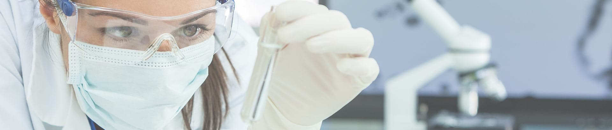

技術介紹
代謝體學
是探討生物體中所有小分子代謝物的變異，藉以呈現生物體因應生理、病理或是基因變異與環境因子所造成的影響。有別於基因體學、轉錄組學及蛋白體學，代謝體為最接近生物表現型的一門體學，並且代謝體顯示的是樣本(細胞/組織/血液/尿液)特定時間內的生理機能，因此分析其最重要的目的在於可以直接透過分子結構說明生理狀態的變化，並可從數據中找尋與特定疾病相關之生物標記，作為精準醫療上疾病診斷與預測之依據。
標靶分析 - 只要被我盯上就再也逃不掉
標靶分析提供了精確的代謝物相關資訊，對於目標分析物能了解的更加深入。不只限於代謝物，與健康相關的食安、醫藥、環境等需求日益增加，政府也制定出更多的安全法規，而標靶分析正是符合上述需求且將生活導向更高品質的最佳推手。此項技術的應用與生活息息相關，例如：蔬果中的農藥殘留、毒品檢測、新藥開發、健康狀態等都離不開標靶分析，無時無刻為了更舒適更安全的生活把關。
雷文虎克擁有化學專業背景以及多年標靶分析經驗，透過高靈敏的液相層析串聯式質譜儀藉由正確的質荷比（mass-to-charge ratio，m/z）與層析滯留時間來鎖定正確的分析物，並開發出優異的定量能力。雷文虎克致力為學業與產業界提供精準的標靶定量服務，不管是代謝物分析、藥物動力學都能提供客製化方法開發，除此之外，雷文虎克也開發出多組以腸道菌代謝物分析為主之定量平台，藉以更了解並探討代謝物與健康相互關係。讓雷文虎克的專業技術與您一起攜手建立更美好的未來！
雷文虎克擁有化學專業背景以及多年標靶分析經驗，透過高靈敏的液相層析串聯式質譜儀藉由正確的質荷比（mass-to-charge ratio，m/z）與層析滯留時間來鎖定正確的分析物，並開發出優異的定量能力。雷文虎克致力為學業與產業界提供精準的標靶定量服務，不管是代謝物分析、藥物動力學都能提供客製化方法開發，除此之外，雷文虎克也開發出多組以腸道菌代謝物分析為主之定量平台，藉以更了解並探討代謝物與健康相互關係。讓雷文虎克的專業技術與您一起攜手建立更美好的未來！
雷文虎克標靶
平台服務
- 短鏈脂肪酸代謝物
- 腎毒素相關代謝物
- 三甲基胺相關代謝物
- 苯丙胺酸相關代謝物
- 色胺酸代謝物
- 膽酸相關代謝物
- 吲哚相關代謝物
- 客製化方法開發
- 以上方法均建置於 SHIMADZU LC-20ADxr + SCIEX QTrap® 5500
非標靶代謝體學 – 抽絲剝繭的偵探
代謝體是一群相對蛋白體來講較小分子量所組合在一起的體學，並且涵蓋了不同物化性質的代謝物，像是胺基酸、核苷酸、苯類酮類衍生物以及脂質等，皆具有不同的極性也影響著宿主的健康；另外，不同代謝物在生物樣本內的濃度範圍也極為廣泛，這些都是代謝體在分析與檢測上面臨的挑戰，而現行主要應用在代謝體分析的方法有NMR, GC-TOF, LC-TOF, LC-Orbitrap等儀器。
有鑑於代謝體對於生物體內調控及影響生理病理的重要性，並且考量到偵測的靈敏度，本公司採用標準品建立自己的代謝體資料庫，並且搭配上高解析質譜儀 (Orbitrap) 進行非標靶代謝體分析，Orbitrap具有高解析度，其偵測的分子量可以精準到小數點下四位，且相較NMR有更高的靈敏度，可以涵蓋較低濃度的代謝物，有助於我們對生物樣本內代謝物的鑑定。
有鑑於代謝體對於生物體內調控及影響生理病理的重要性，並且考量到偵測的靈敏度，本公司採用標準品建立自己的代謝體資料庫，並且搭配上高解析質譜儀 (Orbitrap) 進行非標靶代謝體分析，Orbitrap具有高解析度，其偵測的分子量可以精準到小數點下四位，且相較NMR有更高的靈敏度，可以涵蓋較低濃度的代謝物，有助於我們對生物樣本內代謝物的鑑定。
以下是本公司所提供的兩種主要非標靶代謝體學分析儀器
- Vanquish UHPLC System + Orbitrap Elite™ Hybrid Ion Trap-Orbitrap Mass Spectrometer
- Ultimate 3000 +Thermo Q Exactive Plus
檢體型式
血液
最小體積 100-150ul
尿液
最小體積 100-150ul
糞便
最小體積 100mg (濕重)
發酵液
最小體積 200ul
其他
細胞／組織
備註：特殊檢體或專案分析可能會有不同的最小體積要求，可來信詢問